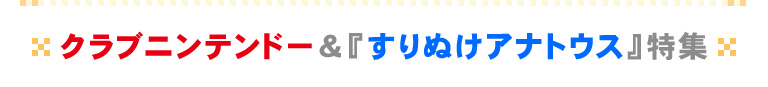
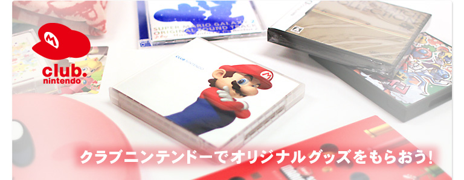
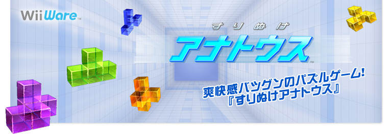

今回のN.O.Mは、ポイントをためるとオリジナルグッズがもらえる会員制サービス「クラブニンテンドー」と、Wiiウェアの新感覚パズルゲーム『すりぬけアナトウス』の大特集です！
「クラブニンテンドー」は、対象となる商品を購入することでもらえるポイントを、オリジナルグッズと交換できる無料のサービスです。今回は特に、「クラブニンテンドー」でしかもらえない珍しいグッズの数々を詳しくご紹介します。また、すでに会員になっている方も、現在行われているキャンペーンやお得情報に要注目です！
Wiiウェア『すりぬけアナトウス』は、さまざまな形をしたカタマリを操作して、壁にあいたアナをすりぬけていくという、ありそうでなかった3Dパズルゲームです。無料の体験版(※)もありますので、迫りくる壁のスリルと、すりぬけられたときの爽快感を、ぜひ一度味わってみてください！ こちらはプレイレポートと開発スタッフへのインタビューをお届けします。
「クラブニンテンドー」は、対象となる商品を購入することでもらえるポイントを、オリジナルグッズと交換できる無料のサービスです。今回は特に、「クラブニンテンドー」でしかもらえない珍しいグッズの数々を詳しくご紹介します。また、すでに会員になっている方も、現在行われているキャンペーンやお得情報に要注目です！
Wiiウェア『すりぬけアナトウス』は、さまざまな形をしたカタマリを操作して、壁にあいたアナをすりぬけていくという、ありそうでなかった3Dパズルゲームです。無料の体験版(※)もありますので、迫りくる壁のスリルと、すりぬけられたときの爽快感を、ぜひ一度味わってみてください！ こちらはプレイレポートと開発スタッフへのインタビューをお届けします。
(※)体験版の配信は終了しました。（2010/10/5）